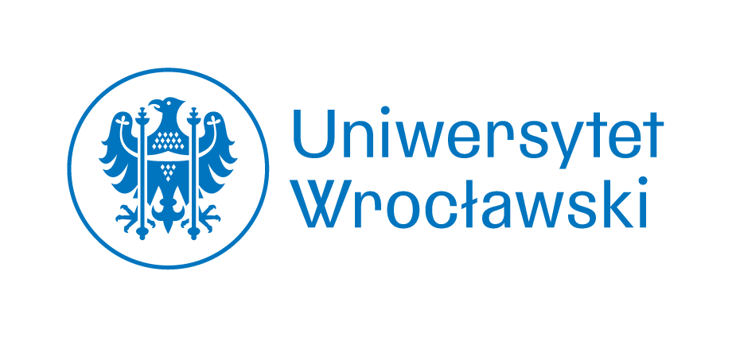
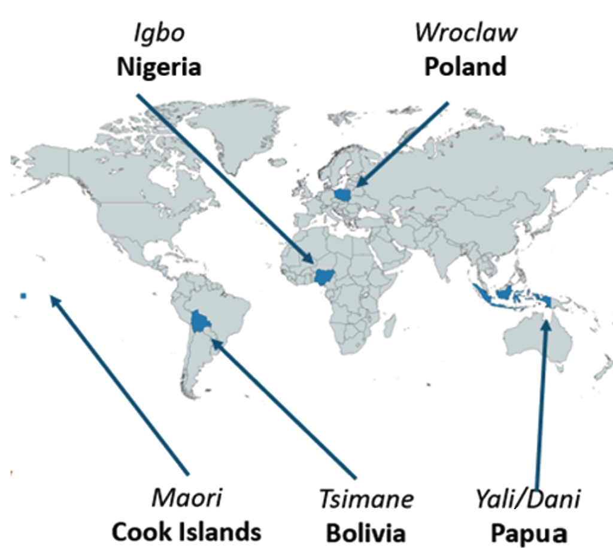
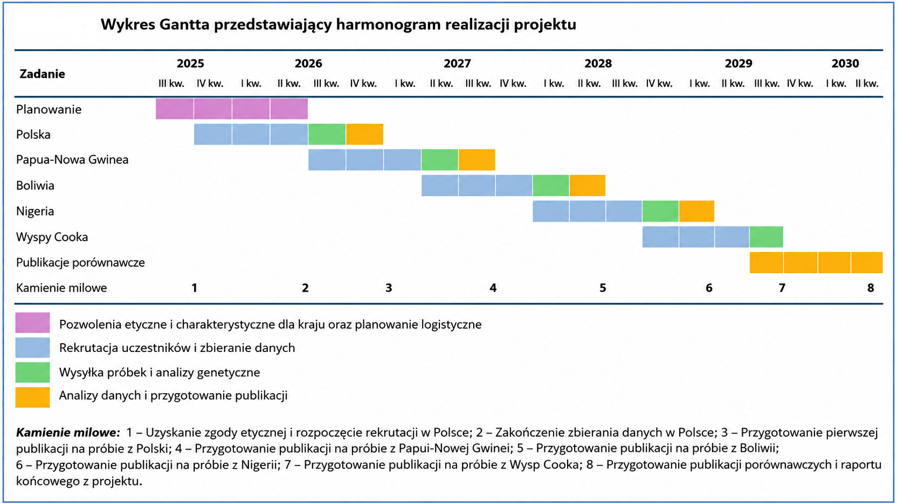
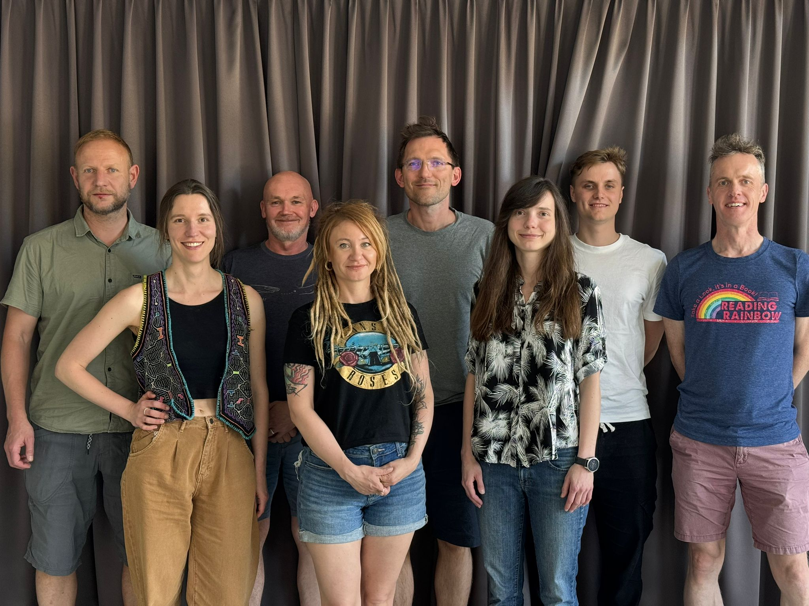

Lipiec 2026
Rozpoczęcie projektu
Projekt „Niewidzialne więzi” rozpoczyna realizację na Uniwersytecie Wrocławskim.


Interdyscyplinarny projekt badawczy
finansowany przez Narodowe Centrum Nauki w ramach konkursu MAESTRO-16
Projekt bada biologiczne, społeczne i psychologiczne mechanizmy, które mogą współtworzyć ludzkie przyciąganie, jakość relacji, atrakcyjność, płodność i zdrowie potomstwa.
Wybór partnera życiowego to jedna z najważniejszych decyzji w życiu człowieka. Choć zwykle tłumaczymy go emocjami, osobowością, wspólnymi wartościami lub „chemią”, część mechanizmów przyciągania może być zakorzeniona także w biologii.
Głównym celem projektu jest zbadanie hipotezy dotyczącej korzyści wynikających z różnorodności genetycznej partnerów. Szczególna uwaga poświęcona jest genom HLA, czyli ludzkiej wersji Głównego Układu Zgodności Tkankowej MHC, ważnego dla funkcjonowania układu odpornościowego.
Projekt sprawdza, czy podobieństwo kompleksu genetycznego HLA partnerów wiąże się z jakością ich relacji, satysfakcją ze związku, rodzicielstwem oraz zdrowiem potomstwa w różnych kontekstach kulturowych.
Dzięki badaniom chcemy odpowiedzieć na jedno z najbardziej fascynujących pytań współczesnej biologii człowieka – jaką rolę odgrywają geny w tworzeniu trwałych związków.
Sprawdzimy, czy partnerzy dobierają się losowo, czy też zgodność lub różnorodność genów HLA zwiększa prawdopodobieństwo stworzenia związku.
Zbadamy, czy zgodność genetyczna partnerów wiąże się z satysfakcją ze związku, trwałością relacji oraz dobrostanem partnerów.
Ocenimy, czy zgodność HLA rodziców ma związek z płodnością, przebiegiem ciąży, liczbą dzieci oraz ich zdrowiem.
Porównamy wyniki uzyskane w Polsce z danymi z kilku populacji pozaeuropejskich, aby sprawdzić, czy obserwowane mechanizmy mają charakter uniwersalny.
Dotychczasowe badania dotyczące roli genów HLA w doborze partnera przyniosły niejednoznaczne wyniki i były prowadzone głównie w populacjach zachodnich. Nasz projekt po raz pierwszy połączy analizy genetyczne, psychologiczne i międzykulturowe na tak dużą skalę, co pozwoli lepiej zrozumieć biologiczne i społeczne mechanizmy kształtujące relacje romantyczne.
Badanie łączy podejścia psychologiczne, antropologiczne i genetyczne.
Określenie charakterystyki psychologicznej, społecznej i zdrowotnej uczestników
Pobierzemy próbkę śliny do analizy genów układu zgodności tkankowej HLA.
Badania będą prowadzone w kilku populacjach reprezentujących różne konteksty kulturowe i społeczne.
Porównamy wzorce doboru partnera i jakości relacji w różnych populacjach.
Sześć populacji na kilku kontynentach

Projekt został zaplanowany na pięć lat i obejmuje kolejne etapy: przygotowanie badań, rekrutację uczestników, analizy genetyczne, opracowanie wyników oraz publikację rezultatów.

Badanie jest skierowane do osób pełnoletnich pozostających w trwałym związku.
Jeśli razem z partnerką lub partnerem chcecie wziąć udział w wyjątkowym projekcie naukowym, który pomoże lepiej zrozumieć co wpływa na tworzenie i trwałość związków, serdecznie zapraszamy do udziału w tym badaniu.
W Polsce badamy pary w kilku lokalizacjach: Wrocław i okolice, Trójmiasto i okolice włącznie z Mierzeją Wiślaną, Szczecin... Napisz do nas koniecznie, aby sprawdzić, czy możemy spotkać się w Twojej lokalizacji!
Poszukujemy heteroseksualnych par, które mają lub planują mieć dzieci.
Udział w badaniu będzie obejmował wypełnienie krótkiego kwestionariusza (ok. 15-20 minut), w którym zapytamy m.in. o długość związku, liczbę dzieci, satysfakcję z relacji, wybrane aspekty zdrowia oraz podstawowe informacje socjodemograficzne. Następnie pobrana zostanie próbka śliny do analizy genów układu zgodności tkankowej (HLA). Próbki śliny będą zbierane w specjalnych probówkach i przekazywane do laboratorium badań genetycznych w Szkocji. Wszystkie dane będą analizowane wyłącznie w celach naukowych i zgodnie z obowiązującymi zasadami ochrony danych osobowych.
Informacje o kolejnych etapach projektu, wyjazdach terenowych, publikacjach i wydarzeniach, pojawią się wkrótce.
Projekt „Niewidzialne więzi” rozpoczyna realizację na Uniwersytecie Wrocławskim.
Zespół przygotowuje procedury badawcze, materiały dla uczestników oraz organizację kolejnych etapów zbierania danych.
W tej sekcji będą publikowane aktualizacje dotyczące postępów projektu.
Projekt to nie tylko badania naukowe. Ważnym elementem naszej działalności jest również popularyzacja wiedzy oraz dzielenie się wynikami badań z szerokim gronem odbiorców.
W trakcie realizacji projektu będziemy organizować otwarte wykłady, prelekcje oraz spotkania popularyzujące naukę. Podczas tych wydarzeń opowiemy o biologicznych i psychologicznych mechanizmach doboru partnera, roli genów HLA oraz najnowszych wynikach naszych badań.
Informacje o pierwszym wydarzeniu zostaną opublikowane wkrótce.
Projekt realizuje międzynarodowy zespół badaczy specjalizujących się w psychologii ewolucyjnej, antropologii biologicznej oraz genetyce.

Wydział Nauk Przyrodniczych, Uniwersytet w Stirling, Wielka Brytania
Instytut Psychologii, Uniwersytet Wrocławski
Collegium Medicum Uniwersytet Jagielloński
Uniwersytet SWPS.
Wydział Nauk o Zdrowiu i Sporcie, Uniwersytet w Stirling, Wielka Brytania
Uniwersytet Karola w Pradze, Czechy
Instytut Psychologii, Uniwersytet Wrocławski
Instytut Psychologii, Uniwersytet Wrocławski
Instytut Psychologii, Uniwersytet Wrocławski
Instytut Psychologii, Uniwersytet Wrocławski
W tej sekcji będą pojawiać się artykuły naukowe, doniesienia konferencyjne i materiały popularyzujące rezultaty badań.
W sprawach dotyczących projektu, współpracy naukowej lub informacji dla uczestników można skontaktować się z zespołem badawczym.
Uniwersytet Wrocławski
Instytut Psychologii
ul. Dawida 1, 50-527 Wrocław
E-mail: MAIL@uwr.edu.pl